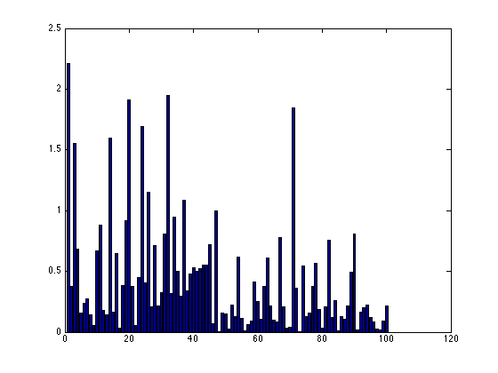

Introduction
The Donders Machine Learning (DML) toolbox is an extensible machine learning toolbox written in Matlab, tailored to the analysis of neural data. The DML package contains high-level functionality as well as implemented multivariate methods.
Contents
Data
Input data takes the form of an nsamples x nvariables matrix. Output data takes the same form. For classification and regression, the output data is assumed to be an nsamples x 1 vector. For classification, this vector contains class labels 1,2,... For regressions this vector contains real values. Multiple outputs are handled by specialized methods. Missing data is indicated using NaN values. Multiple datasets can also be used as an argument, which is represented using a cell-array. More exotic uses will be covered in the examples section. For now lets focus on a classification problem and generate some artificial training data and test data:
rand('seed',1);
X1 = rand(50,100); X1(26:end,1:50) = 0.25+rand(25,50);
X2 = rand(50,100); X2(26:end,1:50) = 0.25+rand(25,50);
Y1 = [ones(25,1); 2*ones(25,1)];
Y2 = [ones(25,1); 2*ones(25,1)];
Methods
A method is a class which contains a train function and a test function. A method's train function can either learn a transformation of X itself (in which case Y is left unspecified) or learn a transformation from X to Y, as in supervised learning. A method's test function takes input data X and transforms this data to an output Y. For instance,
m = dml.standardizer; m = m.train(X1); Z = m.test(X1);
gives a standardized representation Z of X with mean zero and unit standard deviation. In contrast,
m = dml.naive; m = m.train(X1,Y1); Z = m.test(X2);
learns a Gaussian naive Bayes model and tests it on new data. Note that the output is always of the size of the input with the exception of classification methods. In that case, the returned output is a discrete probability distribution over class labels:
Z(1:5,:)
ans =
1.0000 0.0000
1.0000 0.0000
1.0000 0.0000
1.0000 0.0000
1.0000 0.0000
Multiple datasets are trained in the same way:
m = dml.naive;
m = m.train({X1 X1},{Y1 Y1});
Z = m.test({X2 X2});
This is of use when we want to process multiple datasets in parallel or combine the data as in multitask learning. This calling convention presupposes that a method knows how to deal with multiple datasets. This can be facilitated by using the dml.ndata class (see dml.naive for an example of its use).
While we may call methods directly, it is often convenient to encapsulate them in a multivariate analysis object. This object just provides storage for a sequence of multivariate analysis methods. For instance,
m = dml.analysis({dml.standardizer dml.naive});
m = m.train(X1,Y1);
Z = m.test(X2);
creates a multivariate analysis object, trains a sequence of methods and the applies the trained object to data. In order to test the performance, we can for example compute the classification accuracy
dml.statistic('accuracy',Y2,Z)
ans =
1
or use a binomial test for significance
dml.statistic('binomial',Y2,Z)
ans = 8.8818e-16
Low p values indicate that the outcome is significantly different from random classification. For a more stringent significance test, consult the permutation test section. For other statistics please consult dml.statistic.
Instead of examining decoding performance, one may want to examine the parameters of the decoding method in order to be able to identify which features play an important role in the decoding. For this, we can use the model function which is implemented by most methods. This function returns a struct with various diagnostic parameters.
s = m.model;
The meaning of these parameters depends on the used method and can be consulted by invoking the help:
help dml.naive.model;
returns m.divergence summed KL divergences between all pairs of class distributions
Here, the field s.divergence contains an nvariables x 1 vector of KL divergences between the estimated Gaussians for each class. Hence, it gives a measure of separation. Let's plot them
bar(s.divergence);
The divergences indeed indicate that the first 50 features in our data separate the classes, as is expected from the way we generated the data.
Here we showed an example of using naive Bayes which is just one of the implemented methods. Please consult the function reference and examples for additional documentation on the implemented methods.
Crossvalidation
In the previous, we use two separate datasets X1 and X2. Often, in an analysis one would want to perform crossvalidation on one dataset X. That is, the dataset is split up and each data subset is either used for training or for testing. This is facilitated by the dml.crossvalidator object. It takes a multivariate analysis object and a specification of the data subsets and automates the procedure. The stats field is then used to evaluate the results. For instance,
X = rand(50,100); X(26:end,1:50) = 0.1+rand(25,50); Y = [ones(25,1); 2*ones(25,1)]; m = dml.crossvalidator('mva',{dml.standardizer dml.naive},'stat','accuracy'); m = m.train(X,Y); m.statistic
ans =
0.7200
by default performs a five-fold crossvalidation. The crossvalidator is trained and the statistics show that a majority of the trials was correctly classified. The stat field can also be given as an argument to the statistic function as in:
m.statistic('accuracy')
ans =
0.7200
Default crossvalidation behaviour can be overridden using the 'type', 'folds','proportion' and 'resample' fields. A few more examples:
m = dml.crossvalidator('mva',{dml.standardizer dml.naive},'type','nfold','folds',10);
performs ten-fold crossvalidation.
m = dml.crossvalidator('mva',{dml.standardizer dml.naive},'type','split','proportion',0.9);
uses 90% of the data for training and the remainder for testing
m = dml.crossvalidator('mva',{dml.standardizer dml.naive},'resample',true);
will balance non-balanced data using resampling; it upsamples data in the training folds and downsamples data in the test folds.
One may also manually specify which samples belong to each fold using the 'trainfolds' and or 'testfolds' fields. This overrides the previous behaviours. For instance
m = dml.crossvalidator('mva',{dml.standardizer dml.naive},'trainfolds',{1:2:50 2:2:50});
creates a crossvalidator whose training folds consist of uneven and even trials (the complement is taken as test data).
A crossvalidator also accepts multiple datasets. It will then generate results for each dataset. For instance:
m = dml.crossvalidator('mva',{dml.standardizer dml.naive},'trainfolds',{{1:2:50 2:2:50} {1:2:50 2:2:50}}); m = m.train({X X},{Y Y}); m.statistic('accuracy')
ans =
0.6800
0.6800
Permutation testing
In order to test whether the crossvalidation results are significant, we can use permutation testing, where we compare the results under random permutations of the output Y with the actual results:
m = dml.permutation('cv',dml.crossvalidator('mva',{dml.standardizer dml.naive},'stat','accuracy'),'nperm',20,'verbose',true); m = m.train(X,Y); p = m.statistic
testing permutation 1 of 20: 0.52
testing permutation 2 of 20: 0.34
testing permutation 3 of 20: 0.32
testing permutation 4 of 20: 0.40
testing permutation 5 of 20: 0.54
testing permutation 6 of 20: 0.50
testing permutation 7 of 20: 0.44
testing permutation 8 of 20: 0.50
testing permutation 9 of 20: 0.54
testing permutation 10 of 20: 0.54
testing permutation 11 of 20: 0.44
testing permutation 12 of 20: 0.44
testing permutation 13 of 20: 0.48
testing permutation 14 of 20: 0.54
testing permutation 15 of 20: 0.48
testing permutation 16 of 20: 0.46
testing permutation 17 of 20: 0.48
testing permutation 18 of 20: 0.74
testing permutation 19 of 20: 0.44
testing permutation 20 of 20: 0.54
actual outcome: 0.72
p =
0.0500
This means that the null-hypothesis that the actual outcome is not significantly different from the permutated outcomes can be rejected. Note that, in practice, we need many more permutations to get a reliable result. The verbose option, which is available for other objects as well, gives diagnostic output.
Grid search
Methods may require the optimization of particular parameters. This can be achieved using the dml.gridsearch object. The gridsearch object takes a crossvalidator as argument, the parameters which needs to be optimized and the values these parameters may take on. The gridsearch can exploit warm starts; that is, for efficiency reasons, the employed multivariate analysis may start at the previous parameter settings when we test multiple values. This requires the 'restart' parameter in the used multivariate method to be set to false. Note that a gridsearch method can be used within a multivariate analysis pipeline. That is, it behaves as any other method.
In this example we show the use of the gridsearch together with the support vector machine:
m = dml.gridsearch('cv',dml.crossvalidator('type','split','stat','accuracy','mva',dml.svm('restart',false)),'vars','C','vals',fliplr(logspace(-4,1,5)),'verbose',true); m = m.train(X,Y);
optimizing variable(s) dml.svm.C evaluating configuration 1 of 5: dml.svm.C=10.000000 7.500000e-01 : 0.750000 evaluating configuration 2 of 5: dml.svm.C=0.562341 6.666667e-01 : 0.666667 evaluating configuration 3 of 5: dml.svm.C=0.031623 5.833333e-01 : 0.583333 evaluating configuration 4 of 5: dml.svm.C=0.001778 8.333333e-01 : 0.833333 evaluating configuration 5 of 5: dml.svm.C=0.000100 8.333333e-01 : 0.833333 retraining optimum configuration dml.svm.C=0.001778 using all data
Customization
It is easy to write your own wrapper to a new method or even to another toolbox. This new method should be a Matlab class which inherits from the dml.method class and is required to implement the train and test functions. Optionally, it may implement the model function which returns the method's parameters in a suitable form. Comments should follow help coding conventions as shown in the following template:
classdef mymethod < dml.method % MYMETHOD short description % % DESCRIPTION % full description % % REFERENCE (optional) % % EXAMPLE (recommended)
% Copyright statement
properties
myproperty % description of property
end
methods
function obj = mymethod(varargin)
obj = obj@dml.method(varargin{:});end
function obj = train(obj,X,Y)
% return object trained on input data X and (optionally) output data Y
end
function Y = test(obj,X)
% test the trained object on input data X and return output Y
end
function m = model(obj) % MODEL description of what this model returns
% optional: returns parameters of this method
end
end
end